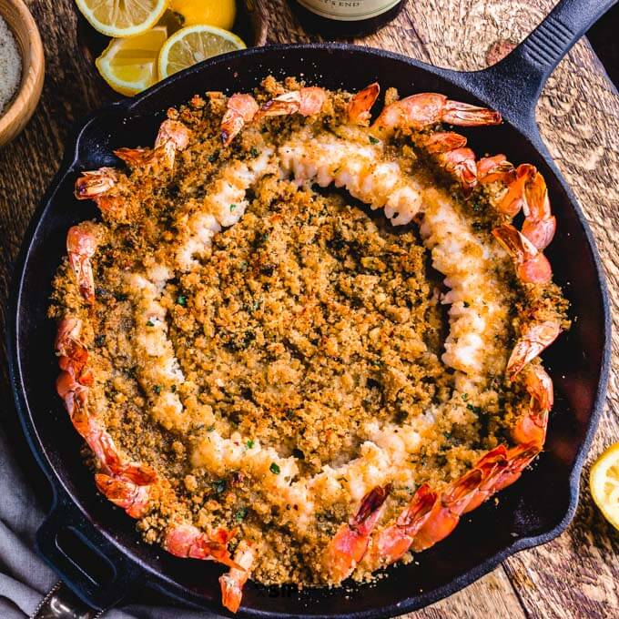

Shrimp Oreganata

Description
Shrimp Oreganata is a mouthwatering seafood dish that combines succulent shrimp with the vibrant
flavors of oregano and breadcrumbs. To prepare this delightful recipe, start by preheating your oven
to 400°F (200°C). In a bowl, combine fresh breadcrumbs, minced garlic, chopped fresh oregano, grated
Parmesan cheese, salt, pepper, and a drizzle of olive oil.
Mix everything together until the breadcrumbs are evenly coated and moist.
Arrange the shrimp in a single layer in a baking dish and drizzle them with olive oil,
then season with salt and pepper. Next, spread the breadcrumb mixture evenly over the shrimp,
pressing it gently to adhere. Place the dish in the preheated oven and bake for approximately 10-12
minutes, or until the shrimp turn pink and opaque, and the breadcrumbs become golden and crispy.
Remove from the oven and let the Shrimp Oreganata cool for a few minutes before serving. This dish can
be enjoyed as an appetizer, a main course, or served alongside pasta or a fresh salad. The combination
of tender shrimp, aromatic oregano, and crunchy breadcrumbs creates a delightful contrast of textures
and flavors that will surely impress your taste buds.
Ingredients
- Cooking spray
- 1 ¾ pounds colossal shrimp (about 12 shrimp)
- ¼ cup dry white wine (such as Pinot Grigio)
- 2 tablespoons extra virgin olive oil
- 1/4 teaspoon kosher salt
- 2 tablespoons chopped fresh parsley, divided, plus more for garnish
- 2 tablespoons chopped garlic, divided
- 2 teaspoons lemon zest, divided
- 1 tablespoon freshly squeezed lemon juice
- 1/2 teaspoons crushed red pepper, divided
- 1/4 cup panko bread crumbs
- 2 tablespoons freshly grated Parmesan cheese
- 3 tablespoons unsalted butter, melted, divided
- 1 lemon, cut into wedges for serving
Steps
-
Gather all ingredients.
-
Preheat the oven to 450 degrees F (230 degrees C). Line a rimmed baking sheet with aluminum foil
and lightly spray with cooking spray.
-
Peel shrimp, leaving tails intact.
-
Use a paring knife to cut lengthwise down vein side of shrimp, cutting almost but not all the way
through the shrimp. Remove the vein and gently press shrimp apart to butterfly it.
-
Combine shrimp, wine, olive oil, salt, 1 tablespoon parsley, 1 tablespoon garlic, 1 teaspoon lemon
zest, and 1/4 teaspoon crushed red pepper in a bowl; toss to coat shrimp evenly. Let stand at room
temperature for at least 10 minutes.
-
Meanwhile, combine panko, Parmesan cheese, 2 tablespoons melted butter, and remaining 1 tablespoon
parsley, 1 tablespoon garlic, 1 teaspoon lemon zest, and 1/4 teaspoon crushed red pepper in a small
bowl; stir until well blended.
-
Remove shrimp from marinade and place, cut side up, about 2 inches apart on the prepared baking sheet.
Top each shrimp with about 2 teaspoons panko mixture, pressing lightly to adhere.
-
Bake in the preheated oven until shrimp are cooked through, 8 to 10 minutes. Without opening oven,
switch oven to broil. Broil until topping is golden brown and crispy, 1 to 2 minutes.
-
Transfer shrimp to a platter. Stir together lemon juice, remaining 1 tablespoon melted butter and
any accumulated juices from the baking sheet in a small bowl; drizzle evenly over shrimp on platter
and garnish with parsley. Serve hot with lemon wedges.